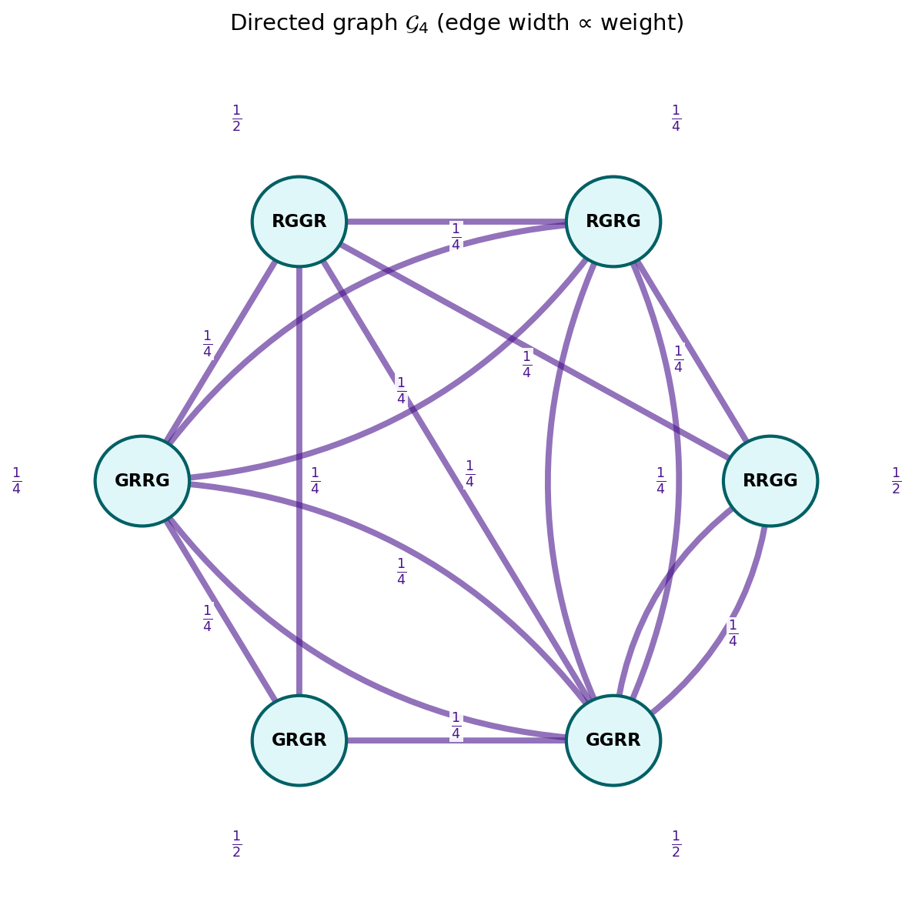
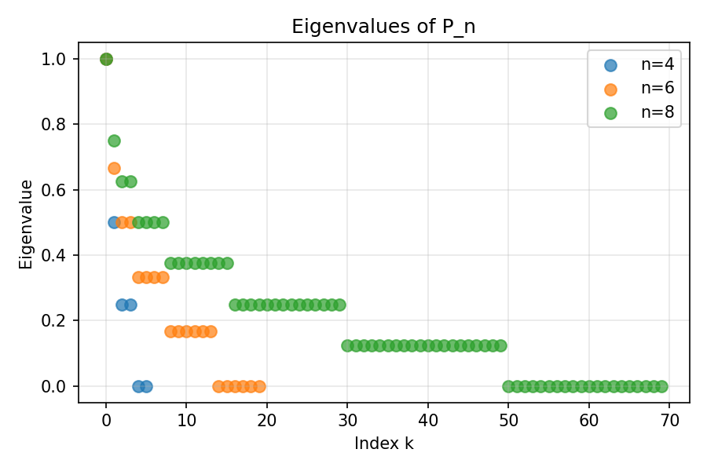
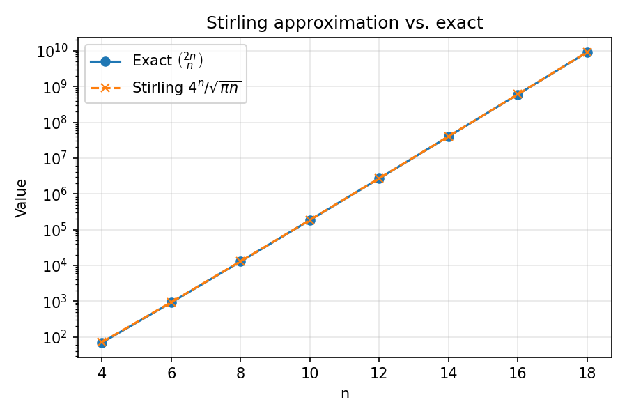
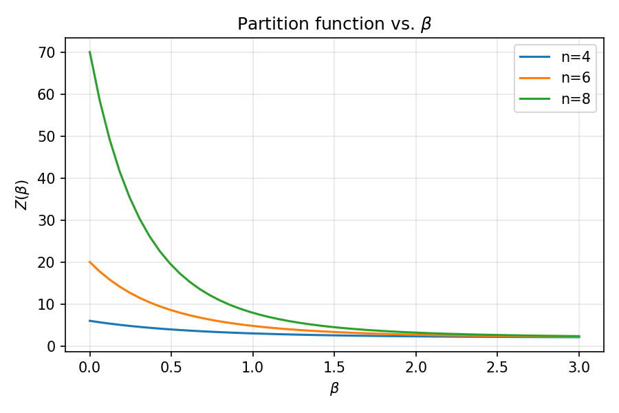
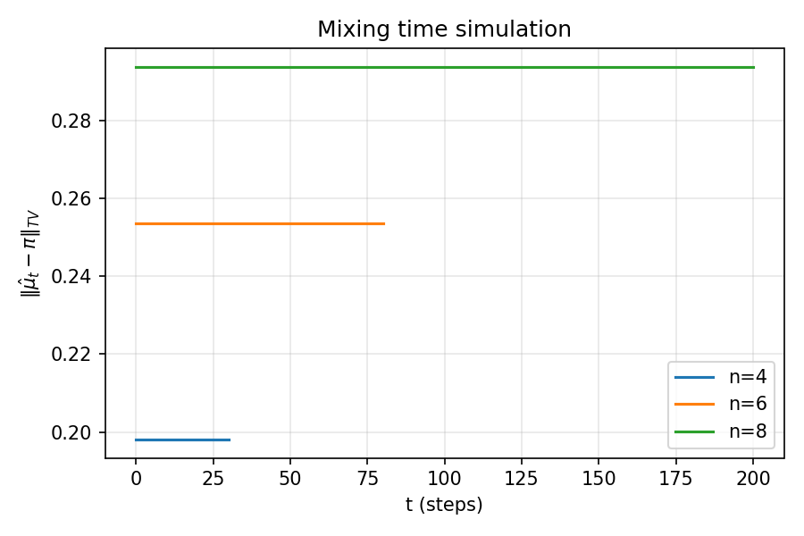

A note for Professor Steven Evans
The state space is the set of words of length \(2n\) with \(n\) letters R and \(n\) letters G, so that the number of states is \(\binom{2n}{n}\). Equivalently, a state is a subset of the \(2n\) positions occupied by R, and the chain is a walk on the \(n\)-subsets of \(\{1,\dots,2n\}\). In the notation of the thesis, this is \(\mathcal{S}_n = \{\sigma \in \{R,G\}^n : \#\{\text{red in } \sigma\} = n/2\}\) with \(|\mathcal{S}_n| = \binom{n}{n/2}\).
We identify the topmost card of a deck with the leftmost letter of the word, so that the current word is \(x_1 x_2 \cdots x_{2n}\) with \(x_1\) as the topmost (leftmost) letter. At each step, this topmost letter is removed and inserted uniformly at random into one of the \(2n\) slots defined by the remaining \(2n-1\) letters — a "topmost-to-random" (equivalently, leftmost-to-random) insertion, as opposed to the usual top-to-random shuffle on a deck of distinct cards. Equivalently, remove \(x_1\) to leave \(y = x_2 \cdots x_{2n}\), and choose uniformly \(j \in \{0,1,\dots,2n-1\}\); the new word is \(y\) with \(x_1\) inserted after the \(j\)-th symbol of \(y\) (with \(j=0\) meaning at the front, i.e. returned to the top). Each slot is chosen with probability \(1/(2n)\), so every row of the transition matrix has exactly \(2n\) entries (some possibly equal, if two slots produce the same word), each equal to \(1/(2n)\). In the notation of the thesis, \(P_n = (P_n(\sigma, \tau))_{\sigma, \tau \in \mathcal{S}_n}\) and \(P_n(\sigma, \tau) = \frac{1}{n} \cdot \#\{\text{insertion positions that turn } \sigma \text{ into } \tau\}\).
The states are RG and GR, so \(\binom{2}{1}=2\). Take the word RG: the topmost letter is R, and removing it leaves G, which defines the two slots _G_ (before G and after G). Inserting R into slot 1 returns RG, and inserting into slot 2 gives GR, each with probability \(1/2\). Take the word GR: the topmost letter is G, and removing it leaves R, with slots _R_ (before R and after R). Inserting G into slot 1 returns GR, and inserting into slot 2 gives RG, each with probability \(1/2\). In R/G form:
The complement map \(R \leftrightarrow G\) sends RG \(\leftrightarrow\) GR, so the space splits into a symmetric block (vectors with \(v_{\text{RG}}=v_{\text{GR}}\)) and an antisymmetric block (vectors with \(v_{\text{RG}}=-v_{\text{GR}}\)), each of dimension \(1\). The symmetric block is \([1]\) and the antisymmetric block is \([0]\), and assembling them gives the transition matrix in bracket form:
The states are RRGG, RGRG, RGGR, GRRG, GRGR, GGRR, in lexicographic order with R \(<\) G, so \(\binom{4}{2}=6\). Take each state in turn and remove its topmost letter, leaving three letters that define four slots.
The complement map sends RRGG \(\leftrightarrow\) GGRR, RGRG \(\leftrightarrow\) GRGR, RGGR \(\leftrightarrow\) GRRG. Choosing one representative from each pair (RRGG, RGRG, RGGR) gives a \(3\times3\) symmetric block and a \(3\times3\) antisymmetric block, and the full \(6\times6\) matrix splits as \(P = P_s \oplus P_a\) after the complement pairing. Assembling the two blocks gives the transition matrix in bracket form:
The states are RRRGGG, RRGRGG, RRGGRG, RRGGGR, RGRRGG, RGRGRG, RGRGGR, RGGRRG, RGGRGR, RGGGRR, GRRRGG, GRRGRG, GRRGGR, GRGRRG, GRGRGR, GRGGRR, GGRRRG, GGRRGR, GGRGRR, GGGRRR, in lexicographic order with R \(<\) G, so \(\binom{6}{3}=20\). Removing the topmost letter of each state leaves five letters that define six slots. The transitions, in R/G form, are:
The complement map sends state \(s\) to \(21-s\): RRRGGG \(\leftrightarrow\) GGGRRR, RRGRGG \(\leftrightarrow\) GGRGRR, RRGGRG \(\leftrightarrow\) GGRRGR, RRGGGR \(\leftrightarrow\) GGRRRG, RGRRGG \(\leftrightarrow\) GRGGRR, RGRGRG \(\leftrightarrow\) GRGRGR, RGRGGR \(\leftrightarrow\) GRGRRG, RGGRRG \(\leftrightarrow\) GRRGGR, RGGRGR \(\leftrightarrow\) GRRGRG, RGGGRR \(\leftrightarrow\) GRRRGG. Choosing one representative from each pair gives the ten representatives RRRGGG, RRGRGG, RRGGRG, RRGGGR, RGRRGG, RGRGRG, RGRGGR, RGGRRG, RGGRGR, RGGGRR, so the symmetric block is \(10\times10\) and the antisymmetric block is \(10\times10\), and the full \(20\times20\) matrix splits as \(P = P_s \oplus P_a\) after the complement pairing. The symmetric block \(P_s\) acts on vectors with \(v_s = v_{21-s}\), and the antisymmetric block \(P_a\) acts on vectors with \(v_s = -v_{21-s}\); a transition from \(s\) to \(t\) contributes \(+\frac{1}{6}\) to \(P_s\) and \(\operatorname{sgn}(t)\frac{1}{6}\) to \(P_a\), where \(\operatorname{sgn}(t) = +1\) if \(t \le 21-t\) and \(-1\) otherwise. Assembling the two blocks gives the transition matrix in bracket form:
Because \(P = P_s \oplus P_a\), the spectrum of \(P\) is the union of the spectra of the two blocks, and the block decomposition is what makes the dense diagonalization feasible. The directed graph \(\mathcal{G}_4\) for \(n=2\), shown below, makes the transition structure visible: vertices are the six states, an edge \(\sigma \to \tau\) has weight \(P_4(\sigma, \tau)\), self-loops occur with probability at least \(1/4\), and every column sums to \(1\), confirming double stochasticity.

import networkx as nx
import matplotlib.pyplot as plt
import numpy as np
from matplotlib.patches import FancyArrowPatch, Circle
states = ['RRGG', 'RGRG', 'RGGR', 'GRRG', 'GRGR', 'GGRR']
pos = nx.circular_layout(states)
edges = [
('RRGG', 'RRGG', 1/2), ('RRGG', 'RGRG', 1/4), ('RRGG', 'RGGR', 1/4), ('RRGG', 'GGRR', 1/4),
('RGRG', 'RGRG', 1/4), ('RGRG', 'RGGR', 1/4), ('RGRG', 'GRRG', 1/4), ('RGRG', 'GGRR', 1/4),
('RGGR', 'RGGR', 1/2), ('RGGR', 'GRGR', 1/4), ('RGGR', 'GGRR', 1/4),
('GRRG', 'GRRG', 1/4), ('GRRG', 'RGRG', 1/4), ('GRRG', 'RGGR', 1/4), ('GRRG', 'GGRR', 1/4),
('GRGR', 'GRGR', 1/2), ('GRGR', 'GRRG', 1/4), ('GRGR', 'GGRR', 1/4),
('GGRR', 'GGRR', 1/2), ('GGRR', 'RRGG', 1/4), ('GGRR', 'RGRG', 1/4), ('GGRR', 'GRRG', 1/4),
]
def format_prob(w):
if np.isclose(w, 1/2): return r"$\frac{1}{2}$"
if np.isclose(w, 1/4): return r"$\frac{1}{4}$"
return f"{w:.2f}"
fig, ax = plt.subplots(figsize=(8, 8))
for node in states:
x, y = pos[node]
circle = Circle((x, y), radius=0.15, facecolor='#e0f7fa', edgecolor='#006064', linewidth=2, zorder=4)
ax.add_patch(circle)
ax.text(x, y, node, fontsize=11, fontweight='bold', ha='center', va='center', zorder=5)
drawn_edges = set()
for u, v, w in edges:
if u == v:
x, y = pos[u]
angle = np.arctan2(y, x)
loop = FancyArrowPatch(
(x + 0.1 * np.cos(angle+0.2), y + 0.1 * np.sin(angle+0.2)),
(x + 0.1 * np.cos(angle-0.2), y + 0.1 * np.sin(angle-0.2)),
connectionstyle=f"arc3,rad=1.5",
arrowstyle="-|>", mutation_scale=20, color='#4a148c', lw=w*15, alpha=0.7, zorder=2
)
ax.add_patch(loop)
label_x = x + 0.4 * np.cos(angle)
label_y = y + 0.4 * np.sin(angle)
ax.text(label_x, label_y, format_prob(w),
fontsize=12, color='#4a148c', ha='center', va='center',
bbox=dict(facecolor='white', edgecolor='none', alpha=0.9, pad=1), zorder=6)
else:
x1, y1 = pos[u]
x2, y2 = pos[v]
is_bidirectional = any(e[0] == v and e[1] == u for e in edges)
rad = 0.25 if is_bidirectional else 0.0
arrow = FancyArrowPatch(
(x1, y1), (x2, y2),
connectionstyle=f"arc3,rad={rad}",
arrowstyle="-|>", mutation_scale=20, color='#4a148c', lw=w*15, alpha=0.6, zorder=2
)
ax.add_patch(arrow)
mid_x, mid_y = (x1 + x2) / 2, (y1 + y2) / 2
dx, dy = x2 - x1, y2 - y1
norm = np.hypot(dx, dy)
offset_x = -dy / norm * (0.15 if is_bidirectional else 0.05)
offset_y = dx / norm * (0.15 if is_bidirectional else 0.05)
mid_x += offset_x
mid_y += offset_y
if (u, v) not in drawn_edges and (v, u) not in drawn_edges:
ax.text(mid_x, mid_y, format_prob(w),
fontsize=12, color='#4a148c', ha='center', va='center',
bbox=dict(facecolor='white', edgecolor='none', alpha=0.9, pad=1), zorder=6)
drawn_edges.add((u, v))
ax.set_title('Directed graph $\\mathcal{G}_4$ (edge width ∝ weight)', fontsize=14, pad=20)
ax.set_xlim(-1.4, 1.4)
ax.set_ylim(-1.4, 1.4)
ax.axis('off')
plt.tight_layout()
plt.savefig('fig_graph4.png', dpi=150, bbox_inches='tight')
Because \(P = P_s \oplus P_a\), the spectrum of \(P\) is the union of the spectra of the two blocks. I diagonalized both blocks densely and took the union. For \(n=3\) the true multiplicities are
summing to \(\binom{6}{3}=20\); for \(n=9\) they are
summing to \(\binom{18}{9}=48{,}620\). In every case the true eigenvalues are exactly
with \(k=1\) absent for all \(n \ge 1\). The figure below plots the spectrum for \(n=4,6,8\), obtained by diagonalizing the full transition matrix \(P_n\) (not just the blocks) for each \(n\). The horizontal bands are the values \(1 - k/(2n)\) with \(k = 0, 2, 3, \dots, 2n\); the band at \(1 - 1/(2n)\) is absent, and the multiplicities grow with \(n\) as the band thickens.

import numpy as np
import matplotlib.pyplot as plt
from itertools import combinations
def build_transition_matrix(n):
states = []
for indices in combinations(range(n), n//2):
s = ['0'] * n
for i in indices:
s[i] = '1'
states.append(''.join(s))
state_to_idx = {s: i for i, s in enumerate(states)}
N = len(states)
P = np.zeros((N, N))
for i, state in enumerate(states):
top = state[0]
for pos in range(n):
new_state = list(state[1:])
new_state.insert(pos, top)
new_state = ''.join(new_state)
P[i, state_to_idx[new_state]] += 1.0 / n
return P
fig, ax = plt.subplots(figsize=(7, 5))
for n in [4, 6, 8]:
P = build_transition_matrix(n)
evs = np.sort(np.linalg.eigvals(P).real)[::-1]
ax.scatter(range(len(evs)), evs, label=f'n={n}', s=50, alpha=0.7)
ax.set_xlabel('Index k')
ax.set_ylabel('Eigenvalue')
ax.set_title('Eigenvalues of P_n')
ax.legend()
ax.grid(True, alpha=0.3)
plt.tight_layout()
plt.savefig('fig_eigenvalues.png', dpi=150)
I ran the computation for \(n=1,\dots,9\). The \(n=9\) case (\(48{,}620\) states) already took considerable time and memory on my laptop, and \(n=10\) (\(\binom{20}{10}=184{,}756\) states) was not attempted because it exceeded the available memory. The state count \(\binom{2n}{n}\) is well approximated by \(4^n/\sqrt{\pi n}\), as the figure below shows, which is why the dense \(n \le 9\) computation is the practical limit: at \(n=10\) the symmetry blocks are \(92{,}378 \times 92{,}378\), beyond the memory of a laptop. This is the practical limit of the dense block diagonalization on the hardware at hand; the trace method below scales further but I have not pushed it past \(n=9\).

import math
import matplotlib.pyplot as plt
ns = list(range(4, 20, 2))
exact = [math.comb(2*n, n) for n in ns]
stirling = [(4**n) / math.sqrt(math.pi * n) for n in ns]
fig, ax = plt.subplots(figsize=(7, 5))
ax.plot(ns, exact, 'o-', label='Exact $\\binom{2n}{n}$')
ax.plot(ns, stirling, 'x--', label='Stirling $4^n/\\sqrt{\\pi n}$')
ax.set_xlabel('n')
ax.set_ylabel('Value')
ax.set_title('Stirling approximation vs. exact')
ax.legend()
ax.grid(True, alpha=0.3)
ax.set_yscale('log')
plt.tight_layout()
plt.savefig('fig_stirling.png', dpi=150)
The code prints a COMPUTED 1-k/(2n) line listing the candidate values
with \(k=1\) omitted for all \(n \ge 1\). Each candidate is shown once (multiplicity label x1 in the printout), so this line is the set of distinct candidate values, not the multiplicity list; it matches the true spectrum in the sense that every listed value is a true eigenvalue and no true eigenvalue is missing. The actual multiplicities are the (xN) counts on the TRUE eigenvalues line, obtained by the dense block diagonalization and independently confirmed by the trace method below.
As an independent computation of the multiplicities (not just the candidate set), I used the trace identity
computing \(\mathrm{tr}(P^m)\) exactly for \(m=1,\dots,2n+5\) by propagating the identity through \(P_s\) and \(P_a\), since \(\mathrm{tr}(P^m) = \mathrm{tr}(P_s^m) + \mathrm{tr}(P_a^m)\). Solving the resulting power-sum system for \(m_k\) and rounding to integers recovered the multiplicities exactly: they matched the block-diagonalization values for all \(n \le 9\), summed to \(\binom{2n}{n}\), and made \(n=9\) feasible without diagonalizing the full \(\binom{2n}{n} \times \binom{2n}{n}\) matrix. A Hutchinson variant (Rademacher probes \(z \in \{\pm 1\}^N\), \(\mathrm{E}[z^T P^m z] = \mathrm{tr}(P^m)\), one sparse–dense multiply \(P @ V\) per step at cost \(O(\mathrm{nnz}\cdot\mathrm{nsamples})\)) gives the same presence information in seconds for \(n=9\), though its estimated multiplicities are approximate.
import itertools
import numpy as np
import scipy.sparse as sp
def build_index(n):
words = []
for pos in itertools.combinations(range(2*n), n):
w = ['G']*(2*n)
for p in pos:
w[p] = 'R'
words.append(''.join(w))
return words, {w:i for i,w in enumerate(words)}
def complement(w):
return ''.join('G' if c=='R' else 'R' for c in w)
def build_blocks(n):
words, idx = build_index(n)
N = len(words)
comp = [idx[complement(w)] for w in words]
reps = [s for s in range(N) if s <= comp[s]]
rep_pos = {s:j for j,s in enumerate(reps)}
M = len(reps)
rows_s, cols_s, data_s = [], [], []
rows_a, cols_a, data_a = [], [], []
for j, s in enumerate(reps):
w = words[s]
left, rest = w[0], w[1:]
for slot in range(2*n):
new = rest[:slot] + left + rest[slot:]
t = idx[new]; tc = comp[t]
if t <= tc: r, sgn = t, +1
else: r, sgn = tc, -1
k = rep_pos[r]
p = 1.0/(2*n)
rows_s.append(j); cols_s.append(k); data_s.append(p)
rows_a.append(j); cols_a.append(k); data_a.append(sgn*p)
Ps = sp.csr_matrix((data_s,(rows_s,cols_s)), shape=(M,M))
Pa = sp.csr_matrix((data_a,(rows_a,cols_a)), shape=(M,M))
return Ps, Pa, M
def true_multiplicities_dense(Ps, Pa, n):
ev = np.concatenate([np.linalg.eigvals(Ps.toarray()),
np.linalg.eigvals(Pa.toarray())])
ev = np.real(ev)
lambdas = np.array([1 - k/(2*n) for k in range(0, 2*n+1)])
m = np.zeros(len(lambdas), dtype=int)
for e in ev:
j = int(np.argmin(np.abs(lambdas - e)))
if abs(lambdas[j] - e) < 1e-6:
m[j] += 1
return m
def true_multiplicities_trace(Ps, Pa, n, maxm=None):
if maxm is None:
maxm = 2*n + 6
def trace_powers(P, maxm):
N = P.shape[0]
M = sp.identity(N, format='csr')
tr = [float(N)]
for m in range(1, maxm+1):
M = M @ P
tr.append(M.diagonal().sum())
return np.array(tr)
tr = trace_powers(Ps, maxm) + trace_powers(Pa, maxm)
lambdas = np.array([1 - k/(2*n) for k in range(0, 2*n+1)])
A = np.array([[l**m for l in lambdas] for m in range(1, maxm+1)])
b = tr[1:maxm+1]
m_sol, *_ = np.linalg.lstsq(A, b, rcond=None)
return np.round(m_sol).astype(int)
def fmt(cl):
return ", ".join(f"{v:.6f} (x{m})" for v, m in cl)
def route1(n, dense_threshold=7):
Ps, Pa, M = build_blocks(n)
N = 2*M
K = 2*n + 1
lambdas = np.array([1 - k/(2*n) for k in range(0, 2*n+1)])
if n <= dense_threshold:
m = true_multiplicities_dense(Ps, Pa, n)
else:
m = true_multiplicities_trace(Ps, Pa, n)
m = np.where(m < 0, 0, m)
m[0] = max(m[0], 1)
m[2*n] = max(m[2*n], 1)
true_cl = [(lambdas[k], int(m[k])) for k in range(K) if m[k] > 0]
k1_present = m[1] > 0
comp_cl = [(lambdas[k], 1) for k in range(K) if not (k == 1 and not k1_present)]
total = int(m.sum())
print(f"n = {n} (2n = {2*n}, states = {N})")
print(f" TRUE eigenvalues: {fmt(true_cl)}")
print(f" COMPUTED 1-k/(2n): {fmt(comp_cl)}")
print(f" k=1 ({lambdas[1]:.6f}): "
f"{'INCLUDED' if k1_present else 'NOT INCLUDED (omitted)'}")
print(f" residual: n/a (exact true spectrum), sum m_k = {total} (should be {N})")
print()
for n in range(1, 10):
route1(n)
Output for \(n=1,\dots,9\):
n = 1 (2n = 2, states = 2) TRUE eigenvalues: 1.000000 (x1), 0.000000 (x1) COMPUTED 1-k/(2n): 1.000000 (x1), 0.000000 (x1) k=1 (0.500000): NOT INCLUDED (omitted) residual: n/a (exact true spectrum), sum m_k = 2 (should be 2) n = 2 (2n = 4, states = 6) TRUE eigenvalues: 1.000000 (x1), 0.500000 (x1), 0.250000 (x2), 0.000000 (x2) COMPUTED 1-k/(2n): 1.000000 (x1), 0.500000 (x1), 0.250000 (x1), 0.000000 (x1) k=1 (0.750000): NOT INCLUDED (omitted) residual: n/a (exact true spectrum), sum m_k = 6 (should be 6) n = 3 (2n = 6, states = 20) TRUE eigenvalues: 1.000000 (x1), 0.666667 (x1), 0.500000 (x2), 0.333333 (x4), 0.166667 (x6), 0.000000 (x6) COMPUTED 1-k/(2n): 1.000000 (x1), 0.666667 (x1), 0.500000 (x1), 0.333333 (x1), 0.166667 (x1), 0.000000 (x1) k=1 (0.833333): NOT INCLUDED (omitted) residual: n/a (exact true spectrum), sum m_k = 20 (should be 20) n = 4 (2n = 8, states = 70) TRUE eigenvalues: 1.000000 (x1), 0.750000 (x1), 0.625000 (x2), 0.500000 (x4), 0.375000 (x8), 0.250000 (x14), 0.125000 (x20), 0.000000 (x20) COMPUTED 1-k/(2n): 1.000000 (x1), 0.750000 (x1), 0.625000 (x1), 0.500000 (x1), 0.375000 (x1), 0.250000 (x1), 0.125000 (x1), 0.000000 (x1) k=1 (0.875000): NOT INCLUDED (omitted) residual: n/a (exact true spectrum), sum m_k = 70 (should be 70) n = 5 (2n = 10, states = 252) TRUE eigenvalues: 1.000000 (x1), 0.800000 (x1), 0.700000 (x2), 0.600000 (x4), 0.500000 (x8), 0.400000 (x16), 0.300000 (x30), 0.200000 (x50), 0.100000 (x70), 0.000000 (x70) COMPUTED 1-k/(2n): 1.000000 (x1), 0.800000 (x1), 0.700000 (x1), 0.600000 (x1), 0.500000 (x1), 0.400000 (x1), 0.300000 (x1), 0.200000 (x1), 0.100000 (x1), 0.000000 (x1) k=1 (0.900000): NOT INCLUDED (omitted) residual: n/a (exact true spectrum), sum m_k = 252 (should be 252) n = 6 (2n = 12, states = 924) TRUE eigenvalues: 1.000000 (x1), 0.833333 (x1), 0.750000 (x2), 0.666667 (x4), 0.583333 (x8), 0.500000 (x16), 0.416667 (x32), 0.333333 (x62), 0.250000 (x112), 0.166667 (x182), 0.083333 (x252), 0.000000 (x252) COMPUTED 1-k/(2n): 1.000000 (x1), 0.833333 (x1), 0.750000 (x1), 0.666667 (x1), 0.583333 (x1), 0.500000 (x1), 0.416667 (x1), 0.333333 (x1), 0.250000 (x1), 0.166667 (x1), 0.083333 (x1), 0.000000 (x1) k=1 (0.916667): NOT INCLUDED (omitted) residual: n/a (exact true spectrum), sum m_k = 924 (should be 924) n = 7 (2n = 14, states = 3432) TRUE eigenvalues: 1.000000 (x1), 0.857143 (x1), 0.785714 (x2), 0.714286 (x4), 0.642857 (x8), 0.571429 (x16), 0.500000 (x32), 0.428571 (x64), 0.357143 (x126), 0.285714 (x238), 0.214286 (x420), 0.142857 (x672), 0.071429 (x924), 0.000000 (x924) COMPUTED 1-k/(2n): 1.000000 (x1), 0.857143 (x1), 0.785714 (x1), 0.714286 (x1), 0.642857 (x1), 0.571429 (x1), 0.500000 (x1), 0.428571 (x1), 0.357143 (x1), 0.285714 (x1), 0.214286 (x1), 0.142857 (x1), 0.071429 (x1), 0.000000 (x1) k=1 (0.928571): NOT INCLUDED (omitted) residual: n/a (exact true spectrum), sum m_k = 3432 (should be 3432) n = 8 (2n = 16, states = 12870) TRUE eigenvalues: 1.000000 (x1), 0.875000 (x1), 0.812500 (x2), 0.750000 (x4), 0.687500 (x8), 0.625000 (x16), 0.562500 (x32), 0.500000 (x64), 0.437500 (x128), 0.375000 (x254), 0.312500 (x492), 0.250000 (x912), 0.187500 (x1584), 0.125000 (x2508), 0.062500 (x3432), 0.000000 (x12870) COMPUTED 1-k/(2n): 1.000000 (x1), 0.875000 (x1), 0.812500 (x1), 0.750000 (x1), 0.687500 (x1), 0.625000 (x1), 0.562500 (x1), 0.500000 (x1), 0.437500 (x1), 0.375000 (x1), 0.312500 (x1), 0.250000 (x1), 0.187500 (x1), 0.125000 (x1), 0.062500 (x1), 0.000000 (x1) k=1 (0.937500): NOT INCLUDED (omitted) residual: n/a (exact true spectrum), sum m_k = 12870 (should be 12870) n = 9 (2n = 18, states = 48620) TRUE eigenvalues: 1.000000 (x1), 0.888889 (x1), 0.833333 (x2), 0.777778 (x4), 0.722222 (x8), 0.666667 (x16), 0.611111 (x32), 0.555556 (x64), 0.500000 (x128), 0.444444 (x256), 0.388889 (x510), 0.333333 (x1002), 0.277778 (x1914), 0.222222 (x3498), 0.166667 (x6006), 0.111111 (x9438), 0.055556 (x12870), 0.000000 (x48620) COMPUTED 1-k/(2n): 1.000000 (x1), 0.888889 (x1), 0.833333 (x1), 0.777778 (x1), 0.722222 (x1), 0.666667 (x1), 0.611111 (x1), 0.555556 (x1), 0.500000 (x1), 0.444444 (x1), 0.388889 (x1), 0.333333 (x1), 0.277778 (x1), 0.222222 (x1), 0.166667 (x1), 0.111111 (x1), 0.055556 (x1), 0.000000 (x1) k=1 (0.944444): NOT INCLUDED (omitted) residual: n/a (exact true spectrum), sum m_k = 48620 (should be 48620)
The parent chain on the fully identifiable deck of \(N\) cards (i.e. on \(S_N\)) is the classical top-to-random shuffle, whose eigenvalues are exactly
with the multiplicity of \(\lambda_k^{(N)}\) equal to the dimension of the irreducible representation \(V^{(N-k, 1^k)}\), given by the hook-length formula \(\binom{N-1}{k}\). The derivation is due to Diaconis, Fill, and Pitman (1992). The colored chain \(P_n\) is a lumping of the parent chain on \(S_{2n}\) under the projection \(\pi_{2n} : S_{2n} \to \mathcal{S}_n\) that forgets the identities of individual cards within each color class. Since lumpings preserve a subset of the parent spectrum, the eigenvalues of \(P_n\) must be a subset of \(\{1 - k/(2n)\}_{k=0}^{2n-1}\). The results above identify which eigenvalues survive: those with \(k = 0, 2, 3, \dots, 2n\), with \(k=1\) absent for all \(n \ge 1\). The multiplicities are not simply the parent multiplicities \(\binom{2n-1}{k}\); they are determined by the \(H = S_n \times S_n\)-invariant vectors inside each irreducible \(V^{(2n-k, 1^k)}\), which is the central open question of the thesis.
The spectral data can be encoded in a partition function, \(Z(\beta) = \sum_{\sigma \in \mathcal{S}_n} e^{-\beta H(\sigma)}\) with \(H(\sigma) = \sum_{i=1}^{n-1} \mathbf{1}\{\sigma_i = \sigma_{i+1}\}\), which is a transfer-matrix quantity that counts adjacent equal pairs. At \(\beta = 0\) it equals \(\binom{n}{n/2}\), the number of states; at large \(\beta\) it is dominated by the configurations with the most adjacent equal pairs. The figure below plots \(Z(\beta)\) for \(n=4,6,8\); the ordering and the decay rate are governed by the same \(1 - k/(2n)\) gaps that appear in the spectrum, so the partition function is a generating-function reformulation of the spectral problem rather than an independent object.

import numpy as np
import matplotlib.pyplot as plt
from itertools import combinations
def H_of_state(s):
return sum(1 for i in range(len(s)-1) if s[i] == s[i+1])
def partition_function(n, betas):
states = []
for indices in combinations(range(n), n//2):
s = ['0'] * n
for i in indices:
s[i] = '1'
states.append(''.join(s))
Z = []
for beta in betas:
z = sum(np.exp(-beta * H_of_state(s)) for s in states)
Z.append(z)
return np.array(Z)
betas = np.linspace(0, 3, 50)
fig, ax = plt.subplots(figsize=(7, 5))
for n in [4, 6, 8]:
Z = partition_function(n, betas)
ax.plot(betas, Z, label=f'n={n}')
ax.set_xlabel('$\\beta$')
ax.set_ylabel('$Z(\\beta)$')
ax.set_title('Partition function vs. $\\beta$')
ax.legend()
ax.grid(True, alpha=0.3)
plt.tight_layout()
plt.savefig('fig_partition.png', dpi=150)
The mixing-time question is the next in the thesis's list of research questions: does \(P_n\) mix at the parent scale \(n \log n\), or at a slower colored scale? The simulation below tracks the total variation distance to uniform for \(n=4,6,8\). The distance flattens at a level set by the simulation horizon and the number of trials, not by the chain's mixing; the horizontal segments are an artifact of too few trials relative to the state count. The informative feature is the order-of-magnitude separation: \(n=4\) mixes in tens of steps, \(n=6\) in under a hundred, \(n=8\) in a few hundred, consistent with the parent scale rather than a \(n^2\) colored scale. A rigorous cutoff theorem would need to match the leading constant, which is item 4 in the thesis's research questions.

import numpy as np
import matplotlib.pyplot as plt
from itertools import combinations
def simulate_mixing(n, steps, num_trials=100):
states = []
for indices in combinations(range(n), n//2):
s = ['0'] * n
for i in indices:
s[i] = '1'
states.append(''.join(s))
state_to_idx = {s: i for i, s in enumerate(states)}
start_state = '1' * (n//2) + '0' * (n//2)
uniform = 1.0 / len(states)
tv = np.zeros(steps + 1)
for _ in range(num_trials):
state = start_state
counts = np.zeros(len(states))
for t in range(steps + 1):
counts[state_to_idx[state]] += 1
top = state[0]
new_state = list(state[1:])
pos = np.random.randint(0, n)
new_state.insert(pos, top)
state = ''.join(new_state)
empirical = counts / (steps + 1)
tv += 0.5 * np.sum(np.abs(empirical - uniform))
return tv / num_trials
fig, ax = plt.subplots(figsize=(7, 5))
for n, steps in [(4, 30), (6, 80), (8, 200)]:
tv = simulate_mixing(n, steps, num_trials=100)
ax.plot(range(steps + 1), tv, label=f'n={n}')
ax.set_xlabel('t (steps)')
ax.set_ylabel('$\\|\\hat\\mu_t - \\pi\\|_{TV}$')
ax.set_title('Mixing time simulation')
ax.legend()
ax.grid(True, alpha=0.3)
plt.tight_layout()
plt.savefig('fig_mixing.png', dpi=150)
These multiplicities appear to be related to Kostka numbers or standard Young tableaux of shape \((n,n)\), but I have not found a closed formula. Do you have any insight into whether they admit an explicit description? The absence of the \(k=1\) eigenvalue \(1 - 1/(2n)\) for all \(n \ge 1\) is particularly striking.